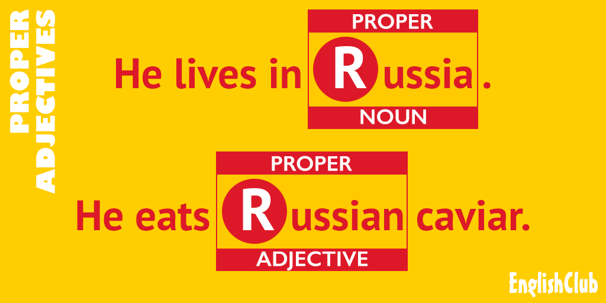

Home
Home
 Lessons
Lessons
 Exercises
Exercises
 Tenses
Tenses
 Writing
Writing
 Vocabulary
Vocabulary

 Glossary
Glossary
Lists of Absolute, Nominal, and Proper Adjectives

- a Trumpian tweet,
- a Shakespearean play,
- the Thai baht,
- French cars
Each of the four examples above contains an adjective ( Trumpian, Shakespearean, Thai, French ) and you will immediately note that each adjective is capitalized—it starts with a capital letter . That is because each of those adjectives comes from a name ( Trump, Shakespeare, Thailand, France ). Names of people, organizations, countries, towns etc are " proper nouns " and need to be capitalized in English. Adjectives made from proper nouns are "proper adjectives" and also need to be capitalized.
Proper nouns are nouns that refer to unique places, people or organizations. The word "country" is a common noun because there are many countries. The word "Thailand" is a proper noun because there is only one Thailand and Thailand is its name. Just like you. You are unique and you have a name. Your name is a proper noun and in English we spell it with a capital letter at the start (example E lizabeth, D onald ).
What are Proper Adjectives?
Most adjectives are " common adjectives ". They describe people, places and things, for example:
Examples:
- tall man, big dog, noisy baby
- large garden, empty room, beautiful city
- red car, hot weather, expensive watch
" Proper adjectives " also describe people, places and things, but they are based on names and therefore need to be capitalized, like the names. For example, Spain is the name of a country and starts with a capital letter. The adjective based on Spain ( Spanish ) must also start with a capital letter. Mars is the name of a planet and starts with a capital letter. The adjective based on Mars ( Martian ) must also start with a capital letter. Shakespeare was the name of a famous writer and starts with a capital letter. The adjective based on Shakespeare ( Shakespearean ) must also start with a capital letter.
Examples:
- Since you live in Spain, do you enjoy Spanish food?
- If people ever live on the planet Mars, they will have to endure the extremes of the Martian climate.
- Although William Shakespeare is best known for his plays, many exams also cover Shakespearean poetry.
Proper adjectives are mostly of two types :
Examples:
- those that come from names of places —countries, continents, regions, cities
- those that come from names of people —usually famous people, mostly historical, some modern
Proper Adjectives from Place Names (countries, continents, regions, cities)
Your country is a proper noun and it has a capitalized proper adjective . Here are a few examples of proper adjectives based on place names, and you can find a much longer list of proper adjectives based on place names here :
| (place) proper noun | proper adjective | example sentence |
|---|---|---|
| Africa | A frican | Jumbo was a famous African elephant. |
| Alaska | A laskan | I just love to eat Alaskan salmon. |
| Alps | A lpine | We need an Alpine guide, please. |
| Amazon | A mazonian | They cut their way through the Amazonian rainforest. |
| Antarctica | A ntarctic | Nothing could prepare them for the ferocity of the Antarctic winds. |
| Asia | A sian | How many Asian countries have you visited? |
| Atlantis (fictional) | A tlantean | He built an Atlantean castle for himself. |
| Bali | B alinese | They scanned the Balinese skyline. |
| Barcelona | B arcelonian | This is one of many Barcelonian traditions. |
| Brazil | B razilian | I have a Brazilian boss. |
| Britain | B ritish | My teacher is British. |
| China | C hinese | Let's go to a Chinese restaurant. |
| Costa Rica | C osta Rican | What are the Costa Rican beaches like? |
| Himalayas | H imalayan | Have you ever experienced a Himalayan winter? |
| Iran | I ranian | We haven't crossed the Iranian border yet. |
| Laos | L aotian | Is there a Laotian consulate here? |
| Lilliput (fictional) | L illiputian | The only way this Lilliputian economy can grow is by exporting. |
| Madagasacar |
M
adagascan,
M alagasy |
His wife is Malagasy. |
| Mexico | M exican | Do you like Mexican food? |
| Middle East | M iddle E astern | There has been a massive growth in Middle Eastern airlines. |
| Moscow | M uscovite | He was accompanied by two Mucovite women. |
| Paris | P arisian | Many Parisian streets are lined with trees. |
| Polynesia | P olynesian | It is one of the most endearing Polynesian traditions. |
| South America | S outh A merican | Cape Horn is the southern tip of the South American landmass. |
| the Philippines | P hilippine | Can you change some Philippine pesos? |
| Tibet | T ibetan | He photographed the stunning Tibetan landscapes. |
| Toronto | T orontonian | We inched our way through the Torontonian traffic. |
| Uzbekistan | U zbek | The Uzbek border is five miles from here. |
| Vienna | V iennese | Though I was born in London, my father was Viennese. |
Proper Adjectives from People's Names (eponymous )
Your name is a proper noun and if you were super-famous it might have a capitalized proper adjective. Nouns and adjectives derived from people's names—both real and fictional—are called " eponymous ". Eponymous adjectives are by definition proper adjectives. Here are a few examples, and you can find a much longer list of eponymous adjectives here :
|
(person's name)
proper noun |
proper adjective | example sentence |
|---|---|---|
| Gautama Buddha | B uddhist | This is the most famous of the Buddhist temples here. |
| Confucius | C onfucian | He was a famous Confucian scholar. |
| Charles Darwin | D arwinian | Some people challenge the concept of Darwinian evolution. |
| Jesus Christ | C hristian | These traditions are inherently Christian. |
| Queen Elizabeth | E lizabethan | Part of this building is Elizabethan. |
| Adolf Hitler | H itlerian | The Hitlerian moustache originated in the need to trim moustaches to fit under gas-masks, worn in response to British mustard gas attacks. |
| Niccolò Machiavelli | M achiavellian | The tactics he encountered were almost Machiavellian. |
| Karl Marx | M arxist | We discussed the finer points of Marxist theory. |
| George Orwell | O rwellian | The vision he described was of a truly Orwellian future. |
| Vladimir Putin | P utinist | Many believe that the Putinist doctrine is no more than old-fashioned nationalism. |
| William Shakespeare | S hakespearean | How many Shakespearean plays have been made into films? |
| Margaret Thatcher | T hatcherite | He was at best a devoted Thatcherite editor. |
Prefixes with Proper Adjectives
Normally, a prefix attached to a proper adjective should not be capitalized . Look at these examples:
Examples:
-
pre-Christian
Paganism was one of many pre-Christian religions. -
pan-European
The search for a pan-European identity started well before 1900. -
post-Thatcherite
Did wages go up in post-Thatcherite Britain?
Note that the prefix should not be capitalized, unless it starts the sentence:
Examples:
- anti-Western
- Anti-Western sentiment was an inevitable consequence.
If the prefix itself is formed from a proper noun, then the prefix should of course by capitalized. In the following example, Austro- comes from the proper noun Austria and Hungarian comes from the proper noun Hungary.
Examples:
-
Austro-Hungarian
The assassination of the heir to the Austro-Hungarian throne led directly to the First World War.
In the next example, the prefix Afro- comes from the proper noun Africa, and Caribbean is the proper adjective from the proper noun Caribbean:
Examples:
-
Afro-Caribbean
He loves Afro-Caribbean music.
Hyphenation with Proper Adjectives
The same logic applies with suffixes and other hyphenated forms—capitalize only the word or words derived from a proper noun :
Examples:
-
English-speaking
She asked for an English-speaking guide to show her around.
When Proper Adjectives Lose their Connection
Sometimes proper adjectives lose their connection with the proper noun that gave them the right to be capitalized, for example:
Examples:
- gargantuan, titanic, caesarian, draconian, herculean, spartan